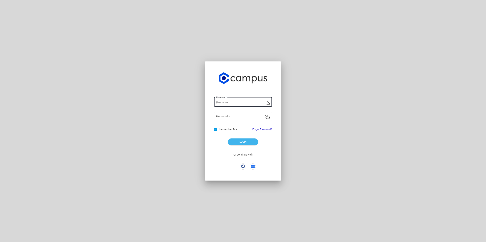
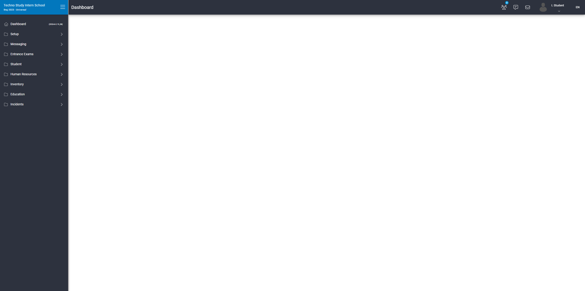

-
DataTable Functionality
12:38:16 AM / 00:00:55:865 Fail
DataTable Functionality
06.05.2023 12:38:16 AM 06.05.2023 12:39:12 AM 00:00:55:865 · #test-id=3PassCreate NationalitiesGiven Navigate to CampusWhen Enter username and password and click login buttonThen User sholud login successfullyAnd Click on the element in LeftNavsetup parameters nationalities And Click on the element in DialogaddButton And User sending the keys in Dialog ContentnameInput mertpolqpqawwww And Click on the element in DialogsaveButton Then Success message should be displayedAnd User delete item from Dialog Contentmertpolqpqawwww Then Success message should be displayedFailCreate FeesGiven Navigate to CampusWhen Enter username and password and click login buttonStep skippedThen User sholud login successfullyStep skippedAnd Click on the element in LeftNavsetup parameters fees Step skippedAnd Click on the element in DialogaddButton Step skippedAnd User sending the keys in Dialog ContentnameInput gfdgdfddd codeInput 1564771232 integrationCode 11331 priorityCode 5435311 Step skippedAnd Click on the element in DialogtoggleBar saveButton Step skippedThen Success message should be displayedStep skippedAnd User delete item from Dialog Contentgfdgdfddd Step skippedThen Success message should be displayedStep skippedStepDefinitions.Hooks.after(io.cucumber.java.Scenario)screenshot nameFailCreate FeesGiven Navigate to CampusWhen Enter username and password and click login buttonStep skippedThen User sholud login successfullyStep skippedAnd Click on the element in LeftNavsetup parameters fees Step skippedAnd Click on the element in DialogaddButton Step skippedAnd User sending the keys in Dialog ContentnameInput gfdgdfddd codeInput 1564771232 integrationCode 11331 priorityCode 5435311 Step skippedAnd Click on the element in DialogtoggleBar saveButton Step skippedThen Success message should be displayedStep skippedAnd User delete item from Dialog Contentgfdgdfddd Step skippedThen Success message should be displayedStep skippedStepDefinitions.Hooks.after(io.cucumber.java.Scenario)PassCreate FeesGiven Navigate to CampusWhen Enter username and password and click login buttonThen User sholud login successfullyAnd Click on the element in LeftNavsetup parameters fees And Click on the element in DialogaddButton And User sending the keys in Dialog ContentnameInput gfdgdfddd codeInput 1564771232 integrationCode 11331 priorityCode 5435311 And Click on the element in DialogtoggleBar saveButton Then Success message should be displayedAnd User delete item from Dialog Contentgfdgdfddd Then Success message should be displayed -
DataTable Functionality
12:38:16 AM / 00:00:24:643 Fail
DataTable Functionality
06.05.2023 12:38:16 AM 06.05.2023 12:38:41 AM 00:00:24:643 · #test-id=2FailCreate NationalitiesGiven Navigate to CampusWhen Enter username and password and click login buttonStep skippedThen User sholud login successfullyStep skippedAnd Click on the element in LeftNavsetup parameters nationalities Step skippedAnd Click on the element in DialogaddButton Step skippedAnd User sending the keys in Dialog ContentnameInput mertpolqpqawwww Step skippedAnd Click on the element in DialogsaveButton Step skippedThen Success message should be displayedStep skippedAnd User delete item from Dialog Contentmertpolqpqawwww Step skippedThen Success message should be displayedStep skippedStepDefinitions.Hooks.after(io.cucumber.java.Scenario) -
DataTable Functionality
12:38:16 AM / 00:00:24:163 Fail
DataTable Functionality
06.05.2023 12:38:16 AM 06.05.2023 12:38:40 AM 00:00:24:163 · #test-id=1FailCreate NationalitiesGiven Navigate to CampusWhen Enter username and password and click login buttonThen User sholud login successfullyAnd Click on the element in LeftNavsetup parameters nationalities Step skippedAnd Click on the element in DialogaddButton Step skippedAnd User sending the keys in Dialog ContentnameInput mertpolqpqawwww Step skippedAnd Click on the element in DialogsaveButton Step skippedThen Success message should be displayedStep skippedAnd User delete item from Dialog Contentmertpolqpqawwww Step skippedThen Success message should be displayedStep skippedStepDefinitions.Hooks.after(io.cucumber.java.Scenario)screenshot name
-
org.openqa.selenium.remote.http.ConnectionFailedException
2 tests
org.openqa.selenium.remote.http.ConnectionFailedException
2 failedStatus Timestamp TestName Fail 00:38:39 AM StepDefinitions.Hooks.after(io.cucumber.java.Scenario) DataTable Functionality.Create Nationalities.StepDefinitions.Hooks.after(io.cucumber.java.Scenario)Fail 00:38:43 AM StepDefinitions.Hooks.after(io.cucumber.java.Scenario) DataTable Functionality.Create Fees.StepDefinitions.Hooks.after(io.cucumber.java.Scenario) -
org.openqa.selenium.WebDriverException
2 tests
org.openqa.selenium.WebDriverException
2 failedStatus Timestamp TestName Fail 00:38:29 AM Then User sholud login successfully DataTable Functionality.Create Nationalities.Then User sholud login successfullyFail 00:38:40 AM Given Navigate to Campus DataTable Functionality.Create Fees.Given Navigate to Campus -
io.cucumber.core.exception.CucumberException
2 tests
io.cucumber.core.exception.CucumberException
2 failedStatus Timestamp TestName Fail 00:38:16 AM Given Navigate to Campus DataTable Functionality.Create Nationalities.Given Navigate to CampusFail 00:38:41 AM Given Navigate to Campus DataTable Functionality.Create Fees.Given Navigate to Campus
-
@Regression
6 tests
@Regression
2 passed 4 failedStatus Timestamp TestName Fail 00:38:16 AM Create Nationalities DataTable Functionality.Create NationalitiesPass 00:38:16 AM Create Nationalities DataTable Functionality.Create NationalitiesFail 00:38:16 AM Create Nationalities DataTable Functionality.Create NationalitiesFail 00:38:40 AM Create Fees DataTable Functionality.Create FeesFail 00:38:41 AM Create Fees DataTable Functionality.Create FeesPass 00:38:42 AM Create Fees DataTable Functionality.Create Fees
Started
Jun 5, 2023 12:38:16 AM
Ended
Jun 5, 2023 12:39:12 AM
Features Passed
0
Features Failed
3
Features
Scenarios
Steps
Timeline
Tags
| Name | Passed | Failed | Skipped | Others | Passed % |
|---|---|---|---|---|---|
| @Regression | 2 | 4 | 0 | 0 | 33.333% |